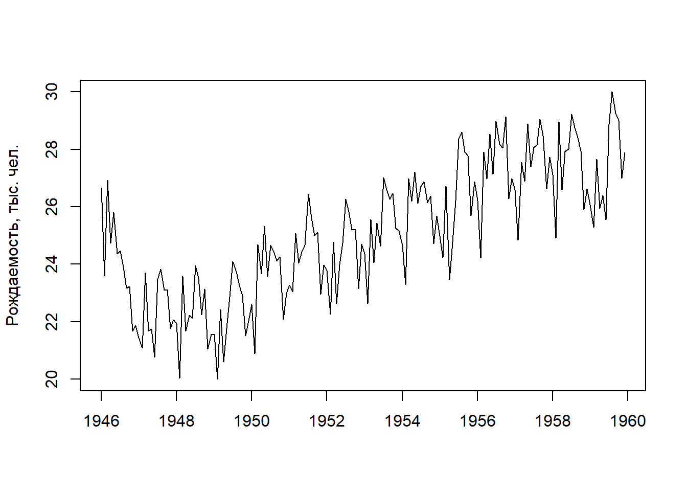

library(dplyr)
require(ggplot2)Все объекты данных (а, следовательно, и переменные) в R можно разделить на следующие классы (т.е. типы объектов):
numeric – объекты, к которым относятся целочисленные
(integer) и действительные числа (double);
logical – логические объекты, которые принимают
только два значения: FALSE (сокращенно F) и
TRUE (T);
character – символьные объекты (значения переменных задаются в двойных, либо одинарных кавычках).
В R можно создавать имена для различных объектов (функций или переменных) как на латинице, так и на кириллице, но следует учесть, что а (кириллица) и а (латиница) - это два разных объекта.
Кроме того, среда R чувствительна к регистру, т.е. строчные и
заглавные буквы в ней различаются. Имена переменных (идентификаторы) в R
должны начинаться с буквы (или точки .) и состоять из букв,
цифр, знаков точки и подчёркивания. При помощи команды
? <имя> можно проверить, существует ли переменная или
функция с указанными именем. Проверка на принадлежность переменной к
определенному классу проверяется функциями
is.numeriс(<имя_объекта>),
is.integer(<имя>),
is.logical(<имя>),
is.character(<имя>), а для преобразования объекта в
другой тип можно использовать функции
as.numeric(<имя>),
as.integer(<имя>),
as.logical(<имя>),
as.character(<имя>).
В R существует ряд специальных объектов:
Inf - положительная или отрицательная бесконечность
(обычно результат деления вещественного числа на 0);NA - “отсутствующее значение” (Not Available);NaN - “не число” (Not a Number).Проверить, относится ли переменная к какому-либо из этих специальных
типов, можно, соответственно, функциями
is.finite(<имя>), is.na(<имя>) и
is.nan(<имя>).
Выражение (expression) языка R представляет собой сочетание таких элементов, как оператор присваивания, арифметические или логические операторы, имена объектов и имена функций. Результат выполнения выражения, как правило, сразу отображается в командном или графическом окне. Однако при выполнении операции присваивания результат сохраняется в соответствующем объекте и на экран не выводится.
В качестве оператора присваивания в R можно использовать либо символ
"=", либо пару символов "<-" (присваивание
определенного значения объекту слева) или "->"
(присваивание значения объекту справа). Хорошим стилем программирования
считается использование "<-".
Выражения языка R организуются в скрипте по строкам. В одной строке
можно ввести несколько команд, разделяя их символом ";".
Одну команду можно также расположить на двух (и более) строках. Объекты
типа numeric могут составлять выражения с использованием
традиционных арифметических операций
+ (сложение),
- (вычитание),
* (умножение),
/ (деление),
^ (возведение в степень),
%/% (целочисленное деление),
%% (остаток от деления).
Операции имеют обычный приоритет, т.е. сначала выполняется возведение в степень, затем умножение или деление, потом уже сложение или вычитание. В выражениях могут использоваться круглые скобки и операции в них имеют наибольший приоритет.
Логические выражения могут составляться с использованием следующих логических операторов:
“Равно” == °
“Не равно” ! = °
“Меньше” < °
“Больше” > °
“Меньше либо равно” <= °
“Больше либо равно” >= °
“Логическое И” & °
“Логическое ИЛИ” | °
“Логическое НЕ” !
Вектор представляет собой поименованный одномерный
объект, содержащий набор однотипных элементов (числовые, логические,
либо текстовые значения - никакие их сочетания не допускаются). Для
создания векторов небольшой длины в R используется функция конкатенации
c() (от “concatenate” - объединять, связывать). В качестве
аргументов этой функции через запятую перечисляют объединяемые в вектор
значения, например:
my.vector <- c(1, 2, 3, 4, 5)
my.vector## [1] 1 2 3 4 5Вектор можно создать также при помощи функции scan(),
которая “считывает” последовательно вводимые с клавиатуры значения:
X <- scan() После каждого нового значения нажать клавишу “Ввод”
1: 2.9
2: 3.1
3: 3.4
4: 3.4
5: 3.7
6: 3.7
7: 2.8
8: 2.5
9: #
Выполнение команды scan завершают введением пустой
строки. Программа сообщает о считывании 8 значений.
X## numeric(0)Один из недостатков создания векторов при помощи функции
scan() состоит в том, что если при вводе значений с
клавиатуры допущена ошибка, то приходится, либо начать ввод заново, либо
воспользоваться специальными инструментами корректировки (например,
функцией fix(); здесь эти способы не рассматриваются). Для
создания векторов, содержащих последовательную совокупность чисел,
удобна функция seq() (от “sequence” - последовательность).
Так, вектор с именем S, содержащий совокупность целых чисел
от 1 до 7, можно создать следующим образом:
S <- seq(1,7)
S## [1] 1 2 3 4 5 6 7Идентичный результат будет получен при помощи команды
S <- 1:7
S## [1] 1 2 3 4 5 6 7В качестве дополнительного аргумента функции seq() можно
задать шаг приращения чисел:
S <- seq(from = 1, to = 5, by = 0.5)
S## [1] 1.0 1.5 2.0 2.5 3.0 3.5 4.0 4.5 5.0Векторы, содержащие одинаковые значения, создают при помощи функции
rep() (от “repeat” - повторять). Например, для формирования
текстового вектора Text, содержащего пять значений “test”,
следует выполнить команду
Text <- rep("test", 5)
Text## [1] "test" "test" "test" "test" "test"Система R способна выполнять самые разнообразные операции над векторами. Так, несколько векторов можно объединить в один, используя уже рассмотренную выше функцию конкатенации:
v1 <- c(1, 2, 3)
v2 <- c(4, 5, 6)
V <- c(v1, v2)
V## [1] 1 2 3 4 5 6Если попытаться объединить, например, текстовый вектор с числовым, сообщение об ошибке не появится - программа просто преобразует все значения в текстовые:
# создаем текстовый вектор text.vect:
text.vect <- c("a", "b", "c")
# объединяем числовой вектор v1 (см. выше)
# с текстовым вектором text.vect:
new.vect <- c(v1, text.vect)
# просмотр содержимого нового вектора new.vect:
new.vect## [1] "1" "2" "3" "a" "b" "c"# все значения нового вектора взяты в кавычки,
# что указывает на их текстовую природу;
# для подтверждения этого воспользуемся командой mode():
mode(new.vect)## [1] "character"# все верно: "character" значит "текстовый"Для работы c определенным элементом вектора необходимо иметь способ отличать его от других элементов. Для этого при создании вектора всем его компонентам автоматически присваиваются индексные номера, начиная с 1. Чтобы обратится к конкретному элементу необходимо указать имя вектора и индекс этого элемента в квадратных скобках:
# создадим числовой вектор у, содержащий 5 числовых значений:
y <- c(5, 3, 2, 6, 1)
# проверим, чему равен третий элемент вектора у:
y[3]## [1] 2Используя индексные номера, можно выполнять различные операции с избранными элементами разных векторов:
# создадим еще один числовой вектор z, содержащий 3 значения:
z <- c(0.5, 0.1, 0.6)
# умножим первый элемент вектора у на третий элемент вектора z
# (т.е. 5*0.6):
y[1]*z[3]## [1] 3Индексирование является мощным инструментом, позволяющим создавать совокупности значений в соответствии с определенными критериями. Например, для вывода на экран 3-го, 4-го и 5-го значений вектора у необходимо выполнить команду
y[3:5]## [1] 2 6 1Из этого же вектора мы можем выбрать, например, только первое и
четвертое значения, используя уже известную нам функцию конкатенации
с():
y[c(1, 4)]## [1] 5 6Похожим образом мы можем удалить первое и четвертое значения из
вектора у, применив знак “минус” перед функцией
конкатенации:
y[-c(1, 4)]## [1] 3 2 1В качестве критерия для выбора значений может служить логическое
выражение. Для примера выберем из вектора у все значения
> 2:
y[y>2]## [1] 5 3 6Индексирование является также удобным инструментом для внесения
исправлений в имеющихся векторах. Например, так можно исправить второе
значение созданного нами ранее вектора z с 0.1 на 0.3:
z[2] <- 0.3
z## [1] 0.5 0.3 0.6Для упорядочения значений вектора по возрастанию или убыванию
используют функцию sort() в сочетании с аргументом
decreasing = FALSE или decreasing = TRUE
соответственно (“decreasing” значит “убывающий”):
sort(z) # по умолчанию decreasing = FALSE## [1] 0.3 0.5 0.6sort(z, decreasing = TRUE)## [1] 0.6 0.5 0.3Матрица представляет собой двумерный вектор. В R для создания матриц служит одноименная функция:
my.mat <- matrix(seq(1, 16), nrow = 4, ncol = 4)
my.mat## [,1] [,2] [,3] [,4]
## [1,] 1 5 9 13
## [2,] 2 6 10 14
## [3,] 3 7 11 15
## [4,] 4 8 12 16Обратите внимание на то, что по умолчанию заполнение матрицы
происходит по столбцам, т.е. первые четыре значения входят в первый
столбец, следующие четыре значения - во второй столбец, и т.д. Такой
порядок заполнения можно изменить, придав специальному аргументу
byrow (от “by row” - по строкам) значение
TRUE:
my.mat <- matrix(seq(1, 16), nrow = 4, ncol = 4, byrow = TRUE)
my.mat## [,1] [,2] [,3] [,4]
## [1,] 1 2 3 4
## [2,] 5 6 7 8
## [3,] 9 10 11 12
## [4,] 13 14 15 16В качестве заголовков строк и столбцов создаваемой матрицы
автоматически выводятся соответствующие индексные номера (строки: [1,],
[2,], и т.д.; столбцы: [,1], [,2], и т.д.). Для придания
пользовательских заголовков строкам и столбцам матриц используют функции
rownames() и colnames() соответственно.
Например, для обозначения строк матрицы my.mat буквами A, B, C и D
необходимо выполнить следующее:
rownames(my.mat) <- c("A", "B", "C", "D")
my.mat## [,1] [,2] [,3] [,4]
## A 1 2 3 4
## B 5 6 7 8
## C 9 10 11 12
## D 13 14 15 16В матрице my.mat имеется 16 значений, которые как раз
вмещаются в имеющиеся четыре строки и четыре столбца. Но что произойдет,
если, например, попытаться вместить вектор из 12 чисел в матрицу того же
размера? В подобных случаях R заполняет недостающие значения за счет
“зацикливания” (recycling) короткого вектора. Вот как это выглядит на
примере:
my.mat2 <- matrix(seq(1, 12), nrow = 4, ncol = 4, byrow = TRUE)
my.mat2## [,1] [,2] [,3] [,4]
## [1,] 1 2 3 4
## [2,] 5 6 7 8
## [3,] 9 10 11 12
## [4,] 1 2 3 4Как видим, для заполнения ячеек последней строки матрицы
my.mat2 программа снова использовала числа 1, 2, 3, и 4.
Альтернативный способ создания матриц заключается в применении функции
dim() (от “dimension” - размерность). Так, матрицу
my.mat мы могли бы сформировать из одномерного вектора
следующим образом:
my.mat <- 1:16
# Задаем размерность 4x4 вектору my.mat:
dim(my.mat) <- c(4,4)# Функция очень полезна. Она позволяет проверить размерность уже имеющейся матрицы (или таблицы данных):
dim(my.mat)## [1] 4 4Матрицу можно собрать также из нескольких векторов, используя функции
cbind() (от colum и bind - столбец и связывать) или
rbind() (от row и bind - строка и связывать):
# Создадим четыре вектора одинаковой длины:
a <- c(1,2,3,4)
b <- c(5,6,7,8)
c <- c(9,10,11,12)
d <- c(13,14,15,16)
# Объединим этим векторы при помощи функции cbind():
cbind (a,b,c,d)## a b c d
## [1,] 1 5 9 13
## [2,] 2 6 10 14
## [3,] 3 7 11 15
## [4,] 4 8 12 16# Объединим те же векторы при помощи функции rbind():
rbind(a, b, c, d)## [,1] [,2] [,3] [,4]
## a 1 2 3 4
## b 5 6 7 8
## c 9 10 11 12
## d 13 14 15 16Практически все векторные операции одинаково применимы в отношении матриц и массивов. Так, путем индексирования мы можем извлекать из матриц необходимые элементы и далее подвергать их требуемым преобразованиям. Рассмотрим лишь несколько примеров:
#Извлечем элемент матрицы my.mat, расположенный на
#пересечении 2-й строки и 3-го столбца:
my.mat[2, 3]## [1] 10#Извлечем из матрицы все элементы, находящиеся в 4-м столбце
#(для этого номера строк перед запятой можно не указывать):
my.mat[, 4]## [1] 13 14 15 16#Извлечем из матрицы все элементы, находящиеся в 1-й строке
#(в этом случае нет необходимости указывать номера столбцов):
my.mat[1, ]## [1] 1 5 9 13# Перемножим 1-й и 4-й столбцы матрицы (поэлементно):
my.mat[,1]*my.mat[,4]## [1] 13 28 45 64Отметим, наконец, что при необходимости матрицу можно транспонировать
(т.е. поменять местами строки и столбцы) при помощи функции
t() (от transpose):
t(my.mat)## [,1] [,2] [,3] [,4]
## [1,] 1 2 3 4
## [2,] 5 6 7 8
## [3,] 9 10 11 12
## [4,] 13 14 15 16Предположим, что в эксперименте по испытанию эффективности нового медицинского препарата было задействовано 10 пациентов-добровольцев, из которых шесть пациентов принимали новый препарат, а четверо остальных - плацебо (например, таблетки активированного угля). Для обозначения членов этих двух групп мы можем использовать коды 1 (препарат) и 0 (плацебо). Соответственно, информацию о всех десяти участниках эксперимента мы могли бы сохранить в виде следующего вектора:
treatment <- c(1, 1, 1, 1, 1, 1, 0, 0, 0, 0)
treatment## [1] 1 1 1 1 1 1 0 0 0 0При таком подходе, однако, программа будет “рассматривать” вектор
treatment в качестве числового (проверьте при помощи команды
class(treatment)). Это будет ошибкой с нашей стороны,
поскольку ноль и единица обозначают лишь два уровня номинальной
переменной. С таким же успехом мы могли бы использовать, например, 10
для обозначения контрольной группы пациентов (т.е. пациентов,
принимавших плацебо) и 110 для обозначения пациентов, принимавших
испытываемый препарат. Для преобразования числового (или текстового)
вектора в фактор в R существует одноименная функция
factor():
treatment <- factor(treatment, levels = c(0, 1))
treatment## [1] 1 1 1 1 1 1 0 0 0 0
## Levels: 0 1Обратите внимание на то, что теперь при выводе содержимого объекта
treatment программа подсказывает нам, что этот объект является фактором
с двумя уровнями (Levels: 0 1). Дополнительно убедиться в
этом можно при помощи все той же команды class(treatment):
class(treatment)## [1] "factor"Более надежным подходом, позволяющим не запутаться при выполнении
анализа, является кодировка уровней факторов при помощи текстовых
значений, а не чисел. Например, в нашем примере можно присвоить значение
yes пациентам, принимавшим препарат, и значение no пациентам из
контрольной группы. Мы можем перекодировать уровни уже имеющегося
фактора treatment при помощи функции levels():
levels(treatment) <- c("no", "yes")
treatment## [1] yes yes yes yes yes yes no no no no
## Levels: no yesЗаметьте, что при выводе содержимого вектора treatment
коды пациентов не заключены в двойные кавычки, как это обычно бывает в
случае с текстовыми значениями. Это является одним из внешних признаков
того, что мы имеем дело именно с фактором, а не с текстовым вектором,
содержащим шесть значений “yes” и четыре значения
“no”. Те же факторы легко преобразовать обратно в числовой
вектор, состоящий из порядковых номеров уровней факторов:
as.numeric(treatment)## [1] 2 2 2 2 2 2 1 1 1 1Существует также специальная команда для создания факторов:
gl(n, k, length = n*k, labels = 1:n),
где n - количество уровней фактора; k -
число повторов для каждого уровня; length - размер
итогового объекта; labels - необязательный аргумент,
который можно использовать для указания названий каждого уровня
фактора.
Например, выполнение следующей команды приведет к созданию вектора
my.fac, являющегося фактором с двумя уровнями - Control и
Treatment, причем каждая из меток “Control” и “Treatment” будет
повторена по 8 раз:
my.fac = gl(2, 8, labels = c("Control", "Treatment"))
my.fac## [1] Control Control Control Control Control Control Control
## [8] Control Treatment Treatment Treatment Treatment Treatment Treatment
## [15] Treatment Treatment
## Levels: Control TreatmentЕще одна полезная команда создает факторы, разделив область вариации
числового вектора x на интервалы:
cut(x, breaks, labels)
где в качестве аргумента breaks может выступать либо
необходимое число интервалов, либо вектор, содержащий список “точек
разрыва”, а labels определяет названия уровней:
x <- c(1,2,3,4,5,2,3,4,5,6,7)
cut(x, breaks=3)## [1] (0.994,3] (0.994,3] (0.994,3] (3,5] (3,5] (0.994,3] (0.994,3]
## [8] (3,5] (3,5] (5,7.01] (5,7.01]
## Levels: (0.994,3] (3,5] (5,7.01]cut(x, breaks=3, labels = letters[1:3])## [1] a a a b b a a b b c c
## Levels: a b ccut(x,breaks=quantile(x,c(0,.25,.50,.75,1)),
labels=c("Q1","Q2","Q3","Q4"),include.lowest=TRUE)## [1] Q1 Q1 Q2 Q2 Q3 Q1 Q2 Q2 Q3 Q4 Q4
## Levels: Q1 Q2 Q3 Q4В третьем фрагменте кода числовой вектор “разрезан” по квартильным
значениям, а параметр include.lowest указан, чтобы избежать
появления неопределенности “NA” для значения
х = 1.
#Списки и таблицы В отличие от вектора или матрицы, которые могут содержать данные только одного типа, в список (list) или таблицу (data frame) можно включать сочетания любых типов данных. Это позволяет эффективно, т.е. в одном объекте, хранить разнородную информацию.
Каждый компонент списка может являться переменной, вектором,
матрицей, фактором или другим списком. Кроме того, эти элементы могут
принадлежать к различным типам: числа, строки символов, булевы
переменные. Списки являются наиболее общим средством хранения
внутрисистемной информации: в частности, результаты большинства
статистических анализов в программе R хранятся в объектах- списках. Для
создания списков в R служит одноименная функция list().
Рассмотрим пример:
# Сначала создадим три разнотипных вектора - с текстовыми,
# числовыми и логическими значениями:
vector1 <- c("A", "B", "C")
vector2 <- seq(1, 3, 0.5)
vector3 <- c(FALSE, TRUE)
# Теперь объединим эти три вектора в один объект-список,
# компонентам которого присвоим имена Text, Number и Logic:
my.list <- list(Text=vector1, Number=vector2, Logic=vector3)
# Просмотрим содержимое созданного списка:
my.list## $Text
## [1] "A" "B" "C"
##
## $Number
## [1] 1.0 1.5 2.0 2.5 3.0
##
## $Logic
## [1] FALSE TRUEК элементам списка можно получить доступ посредством трех различных
операций индексации. Для обращения к поименованным компонентам применяют
знак $. Так, для извлечения компонентов Text,
Number и Logic из созданного нами списка
y.list необходимо последовательно ввести следующие
команды:
my.list$Text## [1] "A" "B" "C"my.list$Number## [1] 1.0 1.5 2.0 2.5 3.0my.list$Logic## [1] FALSE TRUEИмеется возможность извлекать из списка не только его поименованные
компоненты-векторы, но и отдельные элементы, входящие в эти векторы. Для
этого необходимо воспользоваться уже рассмотренным ранее способом -
индексацией при помощи квадратных скобок. Единственная особенность
работы со списками здесь состоит в том, что сначала необходимо указать
имя компонента списка, используя знак $, а уже затем
номер(а) отдельных элементов этого компонента:
my.list$Text[2]## [1] "B"my.list$Number[3:5]## [1] 2.0 2.5 3.0my.list$Logic[1]## [1] FALSEИзвлечение компонентов списка можно осуществлять также с использованием двойных квадратных скобок, в которые заключается номер компонента списка:
my.list[[1]]## [1] "A" "B" "C"my.list[[2]]## [1] 1.0 1.5 2.0 2.5 3.0my.list[[3]]## [1] FALSE TRUEПосле двойных квадратных скобок с индексным номером компонента списка можно также указать номер(а) отдельных элементов этого компонента:
my.list[[1]][2]## [1] "B"my.list[[2]][3:5]## [1] 2.0 2.5 3.0my.list[[3]][1]## [1] FALSEСозданный нами список my.list содержал всего лишь три
небольших вектора, и мы знали, какие это векторы, и на каком месте в
списке они стоят. Однако на практике можно столкнуться с гораздо более
сложно организованными списками, индексирование которых может быть
затруднено из-за отсутствия представлений об их структуре. Для выяснения
структуры объектов в языке R имеется специальная функция
str() (от structure):
str(my.list)## List of 3
## $ Text : chr [1:3] "A" "B" "C"
## $ Number: num [1:5] 1 1.5 2 2.5 3
## $ Logic : logi [1:2] FALSE TRUEИз приведенного примера следует, что список my.list
включает 3 компонента (List of 3) с именами Text,
Number и Logic (перечислены в отдельных
строках после знака $).
Эти компоненты относятся к символьному (chr), числовому
(num) и логическому (logic) типам векторов
соответственно.
Кроме того, команда str() выводит на экран первые
несколько элементов каждого вектора. Таблица данных (data frame)
представляет собой объект R, по структуре напоминающий лист электронной
таблицы Microsoft Excel.
Каждый столбец таблицы является вектором, содержащим данные определенного типа. При этом действует правило, согласно которому все столбцы должны иметь одинаковую длину (собственно, с “точки зрения” R таблица данных является частным случаем списка, в котором все компоненты- векторы имеют одинаковый размер).
Таблицы данных - это основной класс объектов R, используемых для
хранения данных. Обычно такие таблицы подготавливаются при помощи
внешних приложений (особенно популярна и удобна программа Microsoft
Excel) и затем загружаются в среду R. Подробнее об импортировании данных
в R будет рассказано ниже. Тем не менее, небольшую таблицу можно собрать
из нескольких векторов средствами самой системы R. Для этого используют
функцию data.frame(). Предположим, у нас есть наблюдения по
общей численности мужского (Male) и женского (Female) населения в трех
городах City1, City2, и City3.
Представим эти данные в виде одной таблицы с именем CITY.
Для начала создадим текстовые векторы с названиями городов
(city) и пола (sex), а также вектор со
значениями численности представителей каждого пола
(number):
city <- c("City1", "City1", "City2", "City2", "City3", "City3")
sex <- c("Male", "Female", "Male", "Female", "Male", "Female")
number <- c(12450, 10345, 5670, 5800, 25129, 26000)Теперь объединим эти три вектора в одну таблицу данных и посмотрим, что получилось:
CITY <- data.frame(City = city, Sex = sex, Number = number)
CITY## City Sex Number
## 1 City1 Male 12450
## 2 City1 Female 10345
## 3 City2 Male 5670
## 4 City2 Female 5800
## 5 City3 Male 25129
## 6 City3 Female 26000Обратите внимание на синтаксис функции data.frame(): ее
аргументы перечисляются в формате “заголовок столбца = добавляемый
вектор”. В качестве заголовков столбцов могут выступать любые
пользовательские имена, удовлетворяющие требованиям R (см. об этом
подробнее в разделе 2.1). Извлечь отдельные компоненты таблиц для
выполнения необходимых вычислений, как и в примерах со списками, можно с
использованием знака $, квадратных скобок с указанием двух
индексов [<номер_строки>,
<номер_столбца>], двойных квадратных скобок
[[]], либо непосредственно по имени столбца:
CITY$Sex## [1] "Male" "Female" "Male" "Female" "Male" "Female"CITY$Number## [1] 12450 10345 5670 5800 25129 26000# Идентичные результаты можно получить при помощи команд: CITY[,2]
CITY[[3]]## [1] 12450 10345 5670 5800 25129 26000CITY["Sex"]## Sex
## 1 Male
## 2 Female
## 3 Male
## 4 Female
## 5 Male
## 6 FemaleCITY["Number"]## Number
## 1 12450
## 2 10345
## 3 5670
## 4 5800
## 5 25129
## 6 26000После имени или индексного номера столбца можно указывать индексные номера отдельных ячеек таблицы, что позволяет извлекать содержимое этих ячеек:
# Извлекаем 4-й элемент из столбца Number:
CITY$Number[4]## [1] 5800# Извлекаем элементы 1-3 из столбца Number:
CITY$Number[1:3]## [1] 12450 10345 5670# Извлекаем все значения численности, превышающие 10000
CITY$Number[CITY$Number > 10000]## [1] 12450 10345 25129 26000# Извлекаем все значения численности мужского населения:
CITY$Number[CITY$Sex == "Male"]## [1] 12450 5670 25129# Повторяем те же команды, но с использованием []:
CITY[4, 3]## [1] 5800CITY[1:3, 3]## [1] 12450 10345 5670CITY[CITY$Number >10000, 3]## [1] 12450 10345 25129 26000CITY[CITY$Sex == "Male", 3]## [1] 12450 5670 25129При работе с большими таблицами данных бывает сложно визуально
исследовать всё их содержимое перед началом анализа. Однако визуального
просмотра содержимого таблиц и не требуется - полную сводную информацию
о них (равно как и о других объектах R) можно легко получить при помощи
упомянутой ранее функции str() :
str(CITY)## 'data.frame': 6 obs. of 3 variables:
## $ City : chr "City1" "City1" "City2" "City2" ...
## $ Sex : chr "Male" "Female" "Male" "Female" ...
## $ Number: num 12450 10345 5670 5800 25129 ...Как следует из представленного отчета, объект CITY
является таблицей данных, в состав которой входят три переменные с
шестью наблюдениями каждая. Две из этих переменных - City и
Sex - программа автоматически распознала как факторы с
тремя и двумя уровнями соответственно. Переменная Number
является количественной. Для удобства выводятся также несколько первых
значений каждой переменной. Часто возникает необходимость выяснить лишь
имена переменных, входящих в таблицу данных. Это можно сделать при
помощи команды names():
names(CITY)## [1] "City" "Sex" "Number"Имеется также возможность быстро просмотреть несколько первых или
несколько последних значений каждой переменной, входящей в состав
таблицы данных. Для этого используются функции head() и
tail() соответственно:
head(CITY, n = 3)## City Sex Number
## 1 City1 Male 12450
## 2 City1 Female 10345
## 3 City2 Male 5670tail(CITY, n = 2)## City Sex Number
## 5 City3 Male 25129
## 6 City3 Female 26000При необходимости внесения исправлений в таблицу можно
воспользоваться встроенным в R редактором данных. Внешне этот редактор
напоминает обычный лист Excel, однако имеет весьма ограниченные
функциональные возможности. Все, что он позволяет делать - это добавлять
новые или исправлять уже введенные значения переменных, изменять
заголовки столбцов, а также добавлять новые строки и столбцы. Работая в
стандартной версии R, редактор данных можно запустить из меню “Файлы
> Редактор данных”, либо выполнив команду fix() (fix -
исправлять, чинить) из командной строки консоли R (например,
fix(CITY)). После внесения исправлений редактор просто
закрывают - все изменения будут сохранены автоматически.
#Заполнение пустых значений Часто на практике некоторые значения в таблице отсутствуют, что может быть обусловлено множеством причин: на момент измерения прибор вышел из строя, по невнимательности персонала измерение не было занесено в протокол исследования, испытуемый отказался отвечать на определенный вопрос(ы) в анкете, была утеряна проба, и т.п. Ячейки с такими отсутствующими значениями (missing values) в таблицах данных R не могут быть просто пустыми - иначе столбцы таблицы окажутся разной длины. Для обозначения отсутствующих наблюдений в языке R, как указывалось ранее, имеется специальное значение - NA (not available - не доступно). В разделе 4.4 мы остановимся на решении проблемы заполнения пропусков подробнее. Здесь же отметим, что если значение NA имеет смысл нуля (например, экземпляров некого вида обнаружено не было), то легко произвести эту замену в таблице DF командой
DF[is.na(DF)] <- 0
Сортировка строк таблицы по различным ключам не представляет труда. Для этого используется функция order():
DF <- data.frame(X1=c(1,15,1,3), X2=c(1,0,7,0), X3=c(1,0,1,2), X4=c(7,4,41,0), X5=c(1,0,5,3))
row.names(DF) <- c("A","B","C","D")
# DF1 - таблица, столбцы которой отсортированы
# по убыванию суммы значений
DF1 <- DF[, rev(order(colSums(DF)))]
# DF2 - таблица, строки которой отсортированы в восходящем
# порядке по 1 столбцу, затем в нисходящем по второму
DF2 <- DF[order(DF$X1, -DF$X2), ]Пусть мы имеем две таблицы:
DF1
DF1 <- data.frame(Y=c(12,12,12), N=c(22,23,24), A=c(0,1,0), B=c(1,3,0),C=c(0,0,1))
DF1## Y N A B C
## 1 12 22 0 1 0
## 2 12 23 1 3 0
## 3 12 24 0 0 1| Y | N | A | B | C |
|---|---|---|---|---|
| 12 | 22 | 0 | 1 | 0 |
| 12 | 23 | 1 | 3 | 0 |
| 12 | 24 | 0 | 0 | 1 |
DF2
DF2 <- data.frame(Y=c(13,13,13), N=c(22,23,24), A=c(0,0,1), B=c(1,3,0),D=c(2,0,1))
DF2## Y N A B D
## 1 13 22 0 1 2
## 2 13 23 0 3 0
## 3 13 24 1 0 1| Y | N | A | B | D |
|---|---|---|---|---|
| 13 | 22 | 0 | 1 | 2 |
| 13 | 23 | 0 | 3 | 0 |
| 13 | 24 | 1 | 0 | 5 |
Объединить их столбцы можно с использованием известной нам функции:
cbind(DF1,DF2)## Y N A B C Y N A B D
## 1 12 22 0 1 0 13 22 0 1 2
## 2 12 23 1 3 0 13 23 0 3 0
## 3 12 24 0 0 1 13 24 1 0 1Для объединения строк мы должны предварительно преобразовать объединяемые таблицы к единому списку столбцов:
DF1[,names(DF2)[!(names(DF2) %in% names(DF1))]] <- NA
DF2[,names(DF1)[!(names(DF1) %in% names(DF2))]] <- NA
rbind(DF1,DF2)## Y N A B C D
## 1 12 22 0 1 0 NA
## 2 12 23 1 3 0 NA
## 3 12 24 0 0 1 NA
## 4 13 22 0 1 NA 2
## 5 13 23 0 3 NA 0
## 6 13 24 1 0 NA 1Аналогичную операцию мы можем выполнить с помощью команды
merge(DF1, DF2,all = TRUE)## Y N A B C D
## 1 12 22 0 1 0 NA
## 2 12 23 1 3 0 NA
## 3 12 24 0 0 1 NA
## 4 13 22 0 1 NA 2
## 5 13 23 0 3 NA 0
## 6 13 24 1 0 NA 1Функция merge() позволяет выполнять объединение таблиц
всеми распространенными способами join-операций языка SQL.
В предыдущих разделах было рассмотрено, как, работая непосредственно в системе R, можно создать небольшие по объему объекты для хранения данных (векторы, матрицы, списки, таблицы данных).
Следует отметить, однако, что возможности системы R по вводу и
редактированию данных умышленно ограничены ее создателями, которые
предполагали, что для этого будут использоваться другие средства
(например, программа Microsoft Excel или базы данных). Поэтому
подлежащие анализу объемные таблицы данных обычно подготавливаются при
помощи сторонних приложений, и только потом загружаются в рабочую среду
R из внешних файлов. Хотя предпочтение при этом отдается текстовым
файлам, выше был упомянут специальный пакет foreign,
функции которого позволяют импортировать таблицы, сохраненные во
множестве других распространенных форматов (Excel, SPSS, SAS, STAT A,
Access, Matlab, SQL, Oracle, и т.п.; см. также руководство R Data
Import/Export).
Импортирование данных в систему R часто вызывает проблемы у тех, кто только начинает работать с этой программой. Тем не менее, ничего сложного в этом нет. Ниже будут подробно рассмотрены наиболее распространенные способы импорта таблиц данных в рабочую среду R, однако сначала стоит ознакомиться с правилами подготовки загружаемых файлов:
read.table() - см. ниже). Все
последующие строки файла в качестве первого элемента могут содержать
заголовки строк (если таковые предусмотрены), после которых следуют
значения каждой из имеющихся в таблице переменных.Имена столбцов таблицы лучше присвоить с соблюдением правил
идентификации переменных R, т.е. исключить пробелы и другие специальные
символы, кроме точки и подчеркивания. Во избежание проблем, связанных с
кодировкой, все текстовые величины в импортируемых файлах стоит
создавать с использованием букв латинского алфавита. Подлежащий
импортированию файл рекомендуется поместить в рабочую папку программы,
т.е. папку, в которой R по умолчанию будет “пытаться найти” этот файл
(см. раздел 1.1). Чтобы выяснить путь к рабочей папке R на своем
компьютере используйте команду getwd() (get working
directory - узнать рабочую директорию); например:
getwd()## [1] "C:/Users/Work/Documents/GitHub/medR"#[1] "C:/Temp/"Изменить рабочую директорию можно при помощи команды
setwd() (set working directory - создать рабочую
директорию):
#setwd("C:/My Documents")При выполнении этой команды внешне ничего не произойдет, однако
последующее применение команды getwd() покажет, что путь к
рабочей папке изменился:
getwd()## [1] "C:/Users/Work/Documents/GitHub/medR"#[1] "C:/My Documents/"Ниже приведен фрагмент типичной таблицы данных, которая может быть успешно загружена для анализа в среду R:
Name<-c("Ivan", "Vitaliy", "Sergey", "Mikhail")
Group<-c("A","A","B","B")
Variable1<-c(102,98,45,50)
Variable2<-c(1.3,1.4,NA,3.2)
Variable3<-c(14,11,8,6)
df <- data.frame(Name, Group, Variable1, Variable2, Variable3)
print (df)## Name Group Variable1 Variable2 Variable3
## 1 Ivan A 102 1.3 14
## 2 Vitaliy A 98 1.4 11
## 3 Sergey B 45 NA 8
## 4 Mikhail B 50 3.2 6Как видим, приведенный фрагмент имеет размерность 5x5, т.е. состоит
из пяти строк и пяти столбцов. В первой строке представлены заголовки
всех имеющихся в таблице столбцов, за исключением первого. Первый
столбец,хотя и не имеет собственного заголовка, не является пустым - он
содержит имена добровольцев, участвовавших в некотором эксперименте
(Ivan, Vitaliy и т.д.). Второй столбец имеет
заголовок Group и содержит метки, по которым можно выяснить
принадлежность испытуемых к той или иной экспериментальной группе
(A, B и т.д.). Мы уже знаем, что в терминах
языка R переменная Group называется фактором. В последующих
столбцах (с заголовками Variable1, Variable2 и
т.д.) содержатся значения измеренные в ходе исследования переменных. В
приведенном фрагменте таблицы имеется одно отсутствующее значение,
вместо которого введено NA. Пожалуй, одним из наиболее
доступных и удобных средств подготовки данных для их последующего
анализа при помощи R является программа Microsoft Excel. Для сохранения
Excel-таблиц в виде txt- или csv-файлов обычно предлагают использовать
опцию Сохранить как (Save as) в разделе
Файл (File) главного меню этой программы. Другим
простым и надежным способом экспорта данных из Excel является создание в
редакторе Блокнот (Notepade) нового файла и перенос
туда через буфер обмена всей таблицы или выделенной ее части. Основной
функцией для импортирования данных в рабочую среду R является
read.table(). Эта мощная функция позволяет достаточно тонко
настроить процесс загрузки внешних файлов, в связи с чем, она имеет
большое количество управляющих аргументов. Наиболее важные из этих
аргументов перечислены ниже в таблице (подробнее см. файл помощи,
доступный по команде ?read.table).
| Аргумент | Назначение |
|---|---|
| file | Служит для указания пути к импортируемому файлу. Путь приводят либо
в абсолютном виде (например, file = "C:/Temp/MyData. dat"),
либо указывают только имя импортируемого файла (например,
file = "MyData.txt"), но при условии, что последний
хранится в рабочей папке программы (см. выше). В качестве имени можно
также указывать полную URL-ссылку на файл, который предполагается
загрузить из Сети (например:
file = "<http://somesite.net/YourData.csv>"). Начиная
с версии R 2.10, появилась возможность импортировать архивированные
файлы в zip-формате. |
| header | Служит для сообщения программе о наличии в загружаемом файле строки
с заголовками столбцов. По умолчанию принимает значение
FALSE. Если строка с заголовками столбцов имеется, этому
аргументу следует присвоить значение TRUE. |
| row.names | Служит для указания номера столбца, в котором содержатся имена строк
(например, в рассмотренном выше примере это был первый столбец, поэтому
row.names = 1). Важно помнить, что все имена строк должны
быть уникальными, т.е. одинаковые имена для двух или более строк не
допускаются. |
| sep | Служит для указания разделителя значений переменных, используемого в
файле (separator - разделитель). По умолчанию предполагается, что
значения переменных разделены “пустым пространством”, например, в виде
пробела или знака табуляции (sep = ""). В файлах формата
csv значения переменных разделены запятыми, и поэтому для них
sep =",". |
| dec | Служит для указания знака, используемого в файле для отделения целой
части числа от дроби. По умолчанию dec = ".". Однако во
многих странах в качестве десятичного знака применяют запятую, о чем
важно вспомнить перед загрузкой файла и, при необходимости, использовать
dec = ",". Следите, чтобы dec и
sep не были бы одинаковыми. |
| nrows | Выражается целым числом, указывающим количество строк, которое
должно быть считано из загружаемой таблицы. Отрицательные и иные
значения игнорируются. Пример: nrows = 100. |
| skip | Выражается целым числом, указывающим количество строк в файле,
которое должно быть пропущено перед началом импортирования. Пример:
skip = 5 |
Для загрузки тщательно подготовленных файлов (см. правила выше)
достаточно использовать минимальный набор аргументов функции
read.table(). В качестве примера предположим, что нам
необходимо загрузить файл hydro_chem.txt, который хранится в рабочей
папке R и содержит данные по химическому составу воды некоторого
водоема. Загружаемую таблицу данных мы намерены сохранить в виде объекта
с именем chem. Функции read.table() в этом случае может
быть применена следующим образом:
#chem <- read.table(file = "hydro_chem.txt", header = TRUE)Как отмечено выше, импортируемые в R файлы часто имеют формат
csv. Для их загрузки можно воспользоваться той же функцией
read.table(), но при этом следует указать символ, который
используется в качестве разделителя значений переменных в файле
(например, запятая):
#chem <- read.table(file = "hydro_chem.csv", header = TRUE, sep = ",")Аналогом read.table() для считывания csv-файлов является функция read.csv():
#chem <- read.csv(file = "hydro_chem.csv", header = TRUE)Если подлежащий загрузке файл хранится в папке, отличной от рабочей
папки R, то следует указать полный путь к нему. При этом пользователям
операционной системы Windows необходимо помнить, что для указания полных
путей к файлам в программе R используется не обратный одинарный слэш
(\), а прямой одинарный (/) либо двойной
обратный слеш (\\). Например, следующие две команды будут
успешно восприняты R и приведут к идентичному результату - загрузке
файла hydro_chem.txt и сохранению его в виде объекта chem:
#chem <- read.csv(file = "D:\\Documents\\hydrochem.txt", header = TRUE)
#chem <- read.csv(file = "D:/Documents/hydrochem.txt", header = TRUE)Для интерактивного выбора загружаемого файла, который хранится вне
рабочей папки R, можно применить вспомогательную функцию
file.choose() (выбрать файл). Выполнение этой команды
приводит к открытию обычного диалогового окна операционной системы
Windows, в котором пользователь выбирает папку с необходимым файлом.
Очень удобно совмещать file.choose() с командами
read.table() или read.csv(), например:
#chem <- read.table(file = file.choose(), header = TRUE, sep = ",")#Представление даты и времени; временные ряды Форматы представления даты и времени Анализ данных, содержащих даты и время, может иногда сопровождаться приличной головной болью. Причин этому несколько: * разные годы начинаются в разные дни недели; * високосные годы имеют дополнительный день в феврале; * американцы и европейцы по разному представляют даты (например, 8/9/2011 будет 9-м августа 2011 г. для первых и 8-м сентября 2011 г. для вторых); * в некоторые годы добавляется так называемая “секунда координации”; * страны различаются по временным поясам и в ряде случаев применяют переход на “зимнее” и “летнее” время. К счастью, система дат и времени в R такова, что многие из указанных проблем относительно легко преодолеваются. С форматом представления дат и времени в R можно ознакомиться, выполнив команду
Sys.time()## [1] "2022-12-03 21:48:11 MSK"#[1] "2011-09-06 00:38:04 EEST"Как видим, формат строго иерархичен: сначала идет наиболее крупная временная единица - год, потом месяц и день, разделенные дефисом, а затем пробел, час, минуты, секунды и, после еще одного пробела, аббревиатура временной шкалы. Отдельные элементы из этого результата можно извлечь при помощи функции substr() (от substring - часть строки), указав позиции первого и последнего элементов извлекаемой строки:
substr(as.character(Sys.time()), 1, 10)## [1] "2022-12-03"Или
substr(as.character(Sys.time()), 12, 19)## [1] "21:48:11"Функция date() позволяет выяснить текущую дату. Если
выполнить команду:
unclass (Sys.time())## [1] 1670093291###[1] 1315258719то получим время в формате POSIXct, т.е. выраженное в
секундах, прошедших с 1 января 1970 г. (его еще трактуют как Unix-время,
по названию операционной системы). Такой “машинный” формат удобен для
включения в таблицы данных. Для человека более удобным является
представление времени в формате класса POSIXlt. Объекты
этого класса представляют собой списки, включающие такие элементы, как
секунды, минуты, часы, дни, месяцы, и годы. Например, мы можем
конвертировать системное время в объект POSIXlt класса следующим
образом:
date <- as.POSIXlt(Sys.time())Из списка date далее легко можно извлечь такие содержащиеся в нем элементы, как sec (секунды), min (минуты), hour (часы), mday (день месяца), mon (месяц), year (год), wday (день недели, начиная с воскресенья = 0), yday (день года, начиная с 1 января = 0), и isdst (“is daylight savings time in operation?” - логическая переменная, обозначающая, используется ли режим перехода на “зимнее” и “летнее” время: 1 если TRUE и 0 если FALSE), например:
date$wday ## [1] 6#[1] 2
date$yday ## [1] 336#[1] 248Для просмотра всего содержимого списка date можно использовать
функцию unclass() в сочетании с unlist():
unlist(unclass(date))## sec min hour mday
## "11.5441510677338" "48" "21" "3"
## mon year wday yday
## "11" "122" "6" "336"
## isdst zone gmtoff
## "0" "MSK" "10800"#Вычисления с датами и временем
В R можно выполнять следующие типы вычислительных операций с датами и временем: * число + время; * время - число; * время 1 - время2 * время1 “логический оператор” время2 (в качестве логического оператора могут использоваться ==, ! =, <=, <, > или >=).
Важной особенностью является то, что перед выполнением любых
вычислений с датами или временем необходимо конвертировать их в объекты
класса POSIXlt. Например, количество дней между 15 сентября
2011 г. и 15 сентября 2000 года можно найти следующим образом:
t1 <- as.POSIXlt("2011-09-15")
t2 <- as.POSIXlt("2000-09-15")
t1 - t2## Time difference of 4017 days#Time difference of 4017 daysРазницу во времени, выраженную в часах, можно рассчитать так:
t3<-as.POSIXlt("2010-09-22 08:30:30")
t4<-as.POSIXlt("2010-09-22 22:25:30")
t4-t3## Time difference of 13.91667 hours#Time difference of 13.91667 hoursЕще проще разницу между двумя датами можно найти при помощи готовой
функции difftime() (от difference - разница, и time -
время):
difftime("2011-09-22", "2010-06-22")## Time difference of 457 days#Time difference of 457 daysЧтобы извлечь непосредственно количество дней из результата
выполнения предыдущей команды используйте функцию
as.numeric():
as.numeric(difftime("2011-09-22", "2010-06-22"))## [1] 457#[1] 457Обратите внимание: в R отсутствует возможность для сложения двух дат.
Измерить продолжительность какого-нибудь вычислительного процесса можно
с использованием функции “процессорного времени”
proc.time(), которая, по существу, работает как секундомер:
вы засекаете стартовое время, запускаете процесс и, после его
завершения, находите разность времен. Например, чтобы вычислить 10 000
значений арктангенса, потребуется 0.02 сек.:
t1 <- proc.time()
for (x in 1:10000) y <- atan(x)
time.result <- proc.time() - t1
time.result["elapsed"]## elapsed
## 0.01Функция strptime() (от strip - раздевать, оголять, и
time - время) позволяет извлекать даты и время из различных текстовых
выражений. При этом важно верно указать формат (при помощи аргумента
format), в котором приведены временные величины. Приняты
следующие условные обозначения для наиболее часто используемых форматов
дат и времени (детали доступны по команде ?strptime):
%a - сокращенное название для недели (англ. яз.)
%A - полное название для недели (англ. яз.) %b
- сокращенное название месяца (англ. яз.) %B - полное
название месяца (англ. яз.) %d - день месяца (01-31)
%H - часы от 00 до 23 %I - часы от 01 до 12
%j - порядковый номер дня года (001-366) %m -
порядковый номер месяца (01-12) %M - минуты (00-59)
%S - секунды (00-61, с возможностью добавить “високосную
секунду”) %U - неделя года (00-53), первое вокресенье
считается первым днем первой недели %w - порядковый номер
дня недели (0-6, воскресенье - 0) %W - неделя года (00-53),
первый понедельник считается первым днем первой недели %Y -
год с указанием века %y - год без указания века
Рассмотрим пример. Предположим, у нас имеется текстовый вектор, в котором хранятся даты в формате программы Microsoft Excel:
dates.excel <- c("25/02/2008", "24/04/2009", "14/06/2009", "25/07/2010", "04/03/2011")Формат имеющихся Excel-дат таков, что сначала идет день месяца, затем
порядковый номер самого месяца и, наконец, год с указанием века.
Требуется преобразовать эти текстовые выражения в даты формата R.
Используя приведенные выше обозначения форматов функции
strptime(), параметр format можно представить в виде
%d/%m/%Y. Тогда команда для преобразования Excel-дат в
R-даты будет выглядеть следующим образом:
strptime(dates.excel, format = "%d/%m/%Y")## [1] "2008-02-25 MSK" "2009-04-24 MSD" "2009-06-14 MSD" "2010-07-25 MSD"
## [5] "2011-03-04 MSK"Вот еще один пример, в котором год приведен без указания века, а месяцы приведены в виде их сокращенных названий:
example2 <- c("1jan79", "2jan99", "31jan04", "30aug05")
#strptime(other.dates, "%d%b%y")
#[1] "1979-01-01" "1999-01-02" "2004-01-31" "2005-08-30"#Временные ряды В R существует специальный класс объектов для работы
с данными, представляющими собой временные ряды - ts (от
time series - временной ряд). Для создания объектов этого класса служит
одноименная функция ts(). В качестве примера рассмотрим ежемесячные
данные по рождаемости в г. Нью- Йорк, собранные в период с января 1946
г. по декабрь 1959 г. Пример заимстован из электронной книги A Little
Book of R for Time Series и исходные данные можно загрузить с сайта
проф. Роба Хиндмана (Rob J. Hyndman) следующим образом:
birth <-
scan("http://robjhyndman.com/tsdldata/data/nybirths.dat")Объект birth представляет собой вектор со всеми 168 ежемесячными значениями рождаемости (в тыс. человек), в чем можно убедиться при помощи функции:
is.vector(birth)## [1] TRUE#[1] TRUEФункция head() позволяет просмотреть первые несколько
значений вектора birth (по умолчанию первые 6
значений):
head(birth)## [1] 26.663 23.598 26.931 24.740 25.806 24.364#[1] 26.663 23.598 26.931 24.740 25.806 24.364Преобразовать объект birth во временной ряд очень
просто:
birth.ts <- ts(birth, start = c(1946, 1), frequency = 12)В приведенной команде аргумент start был использован для
того, чтобы указать дату, с которой начинается временной ряд
birth.ts (1946 год, 1-й месяц). Дополнительный аргумент
frequency (частота) позволяет задать шаг приращения
последующих дат - в рассматриваемом примере год разбивается на 12
промежутков, так что шаг приращения составляет 1 месяц. Созданный таким
образом объект birth.ts при просмотре внешне напоминает
матрицу. При этом строкам и столбцам этой матрицы были автоматически,
исходя из значений аргументов start и
frequency, присвоены соответствующие имена (данные по
столбцам Oct, Nov, Dec для экономии места опущены):
birth.ts## Jan Feb Mar Apr May Jun Jul Aug Sep Oct
## 1946 26.663 23.598 26.931 24.740 25.806 24.364 24.477 23.901 23.175 23.227
## 1947 21.439 21.089 23.709 21.669 21.752 20.761 23.479 23.824 23.105 23.110
## 1948 21.937 20.035 23.590 21.672 22.222 22.123 23.950 23.504 22.238 23.142
## 1949 21.548 20.000 22.424 20.615 21.761 22.874 24.104 23.748 23.262 22.907
## 1950 22.604 20.894 24.677 23.673 25.320 23.583 24.671 24.454 24.122 24.252
## 1951 23.287 23.049 25.076 24.037 24.430 24.667 26.451 25.618 25.014 25.110
## 1952 23.798 22.270 24.775 22.646 23.988 24.737 26.276 25.816 25.210 25.199
## 1953 24.364 22.644 25.565 24.062 25.431 24.635 27.009 26.606 26.268 26.462
## 1954 24.657 23.304 26.982 26.199 27.210 26.122 26.706 26.878 26.152 26.379
## 1955 24.990 24.239 26.721 23.475 24.767 26.219 28.361 28.599 27.914 27.784
## 1956 26.217 24.218 27.914 26.975 28.527 27.139 28.982 28.169 28.056 29.136
## 1957 26.589 24.848 27.543 26.896 28.878 27.390 28.065 28.141 29.048 28.484
## 1958 27.132 24.924 28.963 26.589 27.931 28.009 29.229 28.759 28.405 27.945
## 1959 26.076 25.286 27.660 25.951 26.398 25.565 28.865 30.000 29.261 29.012
## Nov Dec
## 1946 21.672 21.870
## 1947 21.759 22.073
## 1948 21.059 21.573
## 1949 21.519 22.025
## 1950 22.084 22.991
## 1951 22.964 23.981
## 1952 23.162 24.707
## 1953 25.246 25.180
## 1954 24.712 25.688
## 1955 25.693 26.881
## 1956 26.291 26.987
## 1957 26.634 27.735
## 1958 25.912 26.619
## 1959 26.992 27.897Функция is.ts() позволяет проверить, действительно ли
созданный нами объект birth.ts является временным рядом:
is.ts(birth.ts)## [1] TRUE#[1] TRUEВ R имеется достаточно большой набор методов для работы с объектами
класса ts. В частности, при помощи функции plot() можно
быстро изобразить временной ряд графически:
plot(birth.ts, xlab = "", ylab = "Рождаемость, тыс. чел.")
Абсолютное большинство процедур обработки данных в R реализуется с помощью функций. Функции представляют собой поименованный программный код, состоящий из некоторого набора переменных, констант, операторов и других функций, и предназначенный для выполнения конкретных операций и задач.
Как правило (но не всегда), функции возвращают результат своего выполнения в виде объекта языка R - переменной определенного класса: вектора, списка, таблицы и т.д. По своему назначению функции можно разделить на характерные группы: арифметические, символьные, статистические и прочие.
Функции могут быть встроенными (т.е. представленными в базовых или подгружаемых пакетах) и собственными (т.е. написанными непосредственно самими пользователями). Некоторые наиболее употребительные встроенные функции представлены ниже:
| Вызов функции и описание | Пример и результат |
|---|---|
abs(х) - модуль величины \(х\) |
abs(-1) -> 1 |
ceiling(х) - округление до целого в большую
сторону |
ceiling(9.435) -> 10 |
floor(х) - округление до целого в меньшую сторону |
floor(2.975) -> 2 |
round (x, digits=n) - округление до указанного числа
digits знаков после десятичной точки |
round(5.475, 2) -> 5.48 |
signif(x, digits=n) - округление до указанного числа
digits значащих цифр |
signif(3.475, 2) -> 3.5 |
trunc(x) - округление до целого числа |
trunc(4.99) -> 4 |
ехр(х) - \(е^x\) |
ехр(2.87) -> 17.637 |
log(x) - логарифм натуральный \(х\) |
log(3.12) -> 1.137 |
log10(x) - логарифм десятичный \(х\) |
log(3.12) -> 0.494 |
sqrt(x) - корень квадратный \(х\) |
sqrt(2.12) -> 1.456 |
cos(x), sin(x), tan(x),
acos(x), cosh(x), acosh(x) -
тригонометрические функции от \(х\) |
cos(1.27*pi) -> -0.661 |
| Вызов функции и описание | Пример и результат |
|---|---|
grep(pattern,x,ignore.case=FALSE,fixed=FALSE) - возврат
индекса первого найденного элемента pattern в \(х\) |
grep("A",c("x","y","A", "z"),fixed=TRUE) –> 3 |
substr(x, start=nl, stop=n2) - выбор или замена
символов в строках символьного вектора \(х\) |
substr("язык R", 2, 4) –> “зык” |
paste(…, sep="") - объединение символов или строк через
значение разделителя sep |
paste("x",l:3,sep="") –>“xl” “x2” “хЗ” |
strsplit(x, split) - разделяет элементы вектора по
разделителям split |
strsplit("абв","") –>“а” “б” “в” |
toupper(x) и tolower(x) - преобразуют
буквы текстового вектора х в прописные и обратно |
toupper("Man") –> “МАЛ” toupper("EAn")
–> “бал” |
Примеры использования статистических функций приводятся в главе 4.
Тремя характерными чертами языка R как языка высокого уровня являются модульность построения, ориентация на объекты, и векторизация вычислений.
Под модульностью понимается широкое использование групп выражений и функций.
Выражения expr, состоящие из объектов данных, вызовов
функций и других операторов языка могут группироваться в фигурных
скобках: {expr_1;…; expr_m}, и значение, которое возвращает
эта группа, представляет собой результат выполнения последнего
выражения. Поскольку такая группа является также выражением, то она
может быть, например, включена в круглые скобки и использоваться как
часть еще более общего выражения.
Например, группа команд ниже выполняет расчет среднего и стандартного отклонения натурального ряда чисел от 1 до 10 и возвращает вектор из этих значений:
{aver <- mean(1:10);
stdev <- sd(1:10);
c(MEAN=aver, SD=stdev)} ## MEAN SD
## 5.50000 3.02765Однако если этот расчет необходимо выполнить неоднократно для различных наборов исходных данных, то его стоит оформить в виде функции. Общий синтаксис оформления собственной функции пользователя таков:
имя_функции <- function(argl, arg2,...) {группа_выражений return(object) }
где имя_функции - имя создаваемой функции, argl,
arg2, … - формальные аргументы функции. Оператор return()
нужен в случаях, когда группа выражений не возвращает целевого
результата. Перед своим первым выполнением функция должна быть
определена в текущем скрипте, либо загружена с помощью команды source()
из скриптового файла, где она была предварительно подготовлена. Тогда
вызов функции может быть осуществлен как
имя_функции (argl, arg2,…)
где argl, arg2,… - фактические аргументы,
связанные с формальными параметрами функции по порядку их следования,
либо по наименованиям. Для представленного выше примера можно оформить
функцию:
stat_param <- function(x){
aver <- mean(x); stdev <- sd(x); c(MEAN=aver, SD=stdev)}и включить ее в коллекцию собственных функций, расположенных в файле my_func.R. Тогда необходимый нам результат, приведенный выше, можно получить, выполнив
#source("my_func.R")
#stat_param (1:10)Компоненты списка аргументов в заголовке функций могут быть обязательными или принимать опциональные значения. Например, следующая функция возводит числовой объект \(x\) в степень \(n\), но если степень не указана, то автоматически происходит возведение в куб:
power <- function(x,n = 3){ х^n }Аргументами функций могут быть объекты самого разного типа, например, названия других функций. Так, следующая функция выполняет произвольные преобразования случайных равномерно распределенных величин:
my_exampl <- function(n, func_trans)
{ x <- runif(n) ; abs(func_trans(x)) }Тогда сгенерировать 5 прологарифмированных значений можно, если записать:
my_exampl(5, log)## [1] 0.2417707 1.0814470 1.0732295 1.3589506 1.8105903#[1] 0.6345459 0.6522557 2.4180118 0.1007311 1.6983938Как и в любом алгоритмическом языке, в R широко используются ветвления и циклы вычислительного процесса. Условный оператор имеет следующую структуру:
if( логическое_выражение ){ группа_выражений_1 если логическое_выражение равно TRUE } else { группа_выражений_2 в противном случае }
Например, следующая функция сравнивает размеры двух векторов:
compare <- function(x, y){ nl <- length(x) ; n2 <- length(y)
if(nl!= n2){
if(nl > n2){ z=(nl - n2)
cat("Первый вектор имеет на ",z," элементов 6ольше \n") }
else{ z=(n2 - nl)
cat("Второй вектор имеет на ",z," элементов 6ольше \n")}} else{cat("Количество элементов одинаково ",nl,"\n") }
}х <- c(1:4)
у <- c(1:9)
compare(х, у)## Второй вектор имеет на 5 элементов 6ольшеПервый вектор имеет на 5 элементов 6ольше Имеется также сокращенная форма реализации ветвлений:
ifelse(логическое выражение, группа выражений 1, группа выражений 2)
Повторение в цикле одних и тех же вычислительных операций осуществляется с использованием конструкций for(), while() или repeat(), которые имеют следующий синтаксис:
for (index in for_object) { группа_выражений }while (логическое_выражение) { группа_выражений } `repeat { группа_выражений ; break }
Здесь объект for_object может быть вектором, массивом,
таблицей, или списком, а группа_выражений выполняется каждый раз для
каждого элемента index этого объекта. Рассмотрим в качестве
примера функцию оценки доверительного интервала среднего значения для
выборки размером n с использованием непараметрического бутстрепа.
Необходимо отметить, что устоявшегося перевода термина “bootstrap” с английского языка на русский не существует. Используются разные варианты: “бутстреп”, “бутстрэп”, “бутстрап”, “размножение выборок”, “метод псевдовыборок” и даже “ресамплинг” (от англ. “resampling’”). Несмотря на сложности с русскоязычным названием, суть метода, тем менее, весьма проста и подробно изложена в оригинальных работах Б. Эфрона (1979-1988). Бутстреп-метод с использованием R для решения различных задач представлен в ряде монографий (Chernick, LaBudde, 2011; Zieffler et al. 2011; Fox, Weisberg, 2012; Шитиков, Розенберг, 2014).
Предположим, что у нас есть выборка некоторого ограниченного объема, и мы имеем основания полагать, что эта выборка является репрезентативной (т.е. хорошо отражает свойства генеральной совокупности, из которой она была взята). Идея бутстреп- метода заключается в том, что мы можем рассматривать саму эту выборку в качестве “генеральной совокупности” и, соответственно, можем извлечь большое число случайных выборок из этой исходной совокупности для расчета интересующего нас параметра (или параметров).
Очевидно, что благодаря случайному процессу формирования этих новых выборок, будет наблюдаться определенная вариация значений оцениваемого параметра. Другими словами, мы получим некоторое распределение значений этого параметра. Рассчитав стандартное отклонение этого распределения, мы получим оценку стандартной ошибки параметра, которая при большом числе наблюдений будет асимптотически приближаться к истинной стандартной ошибке. Аналогично можно получить оценки границ доверительного интервала. Итак, будем генерировать из исходной выборки множество псевдовыборок того же размера, состоящих из случайных комбинаций исходного набора элементов.
При этом используем алгоритм “случайного выбора с возвратом” (random sampling with replacement), т.е. извлеченный элемент возвращается в исходную совокупность и имеет шанс быть выбранным снова. В результате некоторые члены в каждой отдельной псевдовыборке могут повторяться два или более раз, тогда как другие - отсутствовать.
Этот алгоритм в R реализован в функции
sample(data,replace=T). Для каждой псевдовыборки мы
рассчитаем значение среднего, а в качестве границ 95%-ного
доверительного интервала (bootstrap percentile interval) примем 2.5% и
97.5% квантили бутстреп-распределения:
boot_np <- function(data , Nboot=5000) {
boots <- numeric(Nboot) # Пустой вектор для хранения результатов
for (i in 1:Nboot) { boots[i] <- mean(sample(data,replace=T)) }
CI <- quantile(boots, prob=c(0.025,0.975))
return (c(m = mean(data),CI))
}
x <-c(5, 5, 8, 10, 10, 10, 19, 20, 20, 20, 30, 40, 42, 50, 50)
boot_np(x)## m 2.5% 97.5%
## 22.60000 15.39833 30.66667#m 2.5% 97.5%
#22.6 15.0 30.8Здесь конструкция for() осуществляет формирование Nboot
= 5000 значений средних для генерируемых псевдовыборок. Покажем,
пользуясь случаем, как можно оценить выборочный доверительный интервал
обычным параметрическим методом на основе процентилей распределения
Стьюдента:
param_CI <- function(data) {
n = length(data) ; m = mean(data)
SE = sd(data)/sqrt(n); E = qt(.975, df=n-1)*SE
CI <- m + c(-E, E)
return (c(m , CI))
}
param_CI(x)## [1] 22.60000 13.74741 31.45259#[1] 22.6 13.74741 31.45259